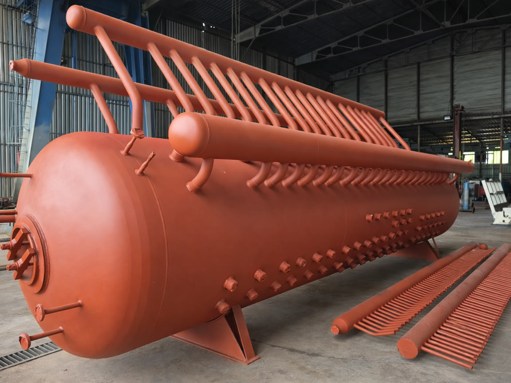
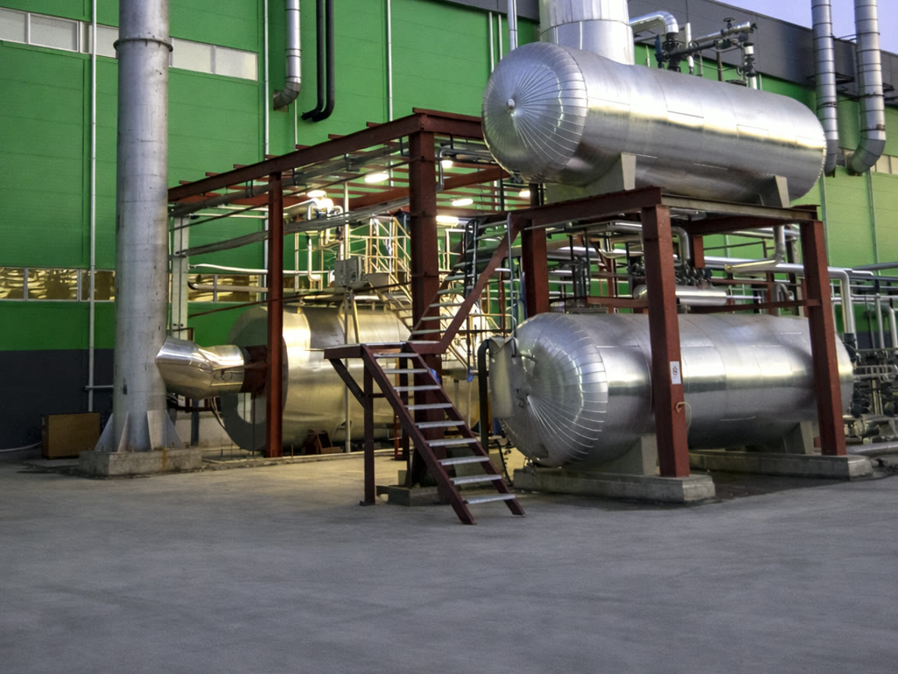
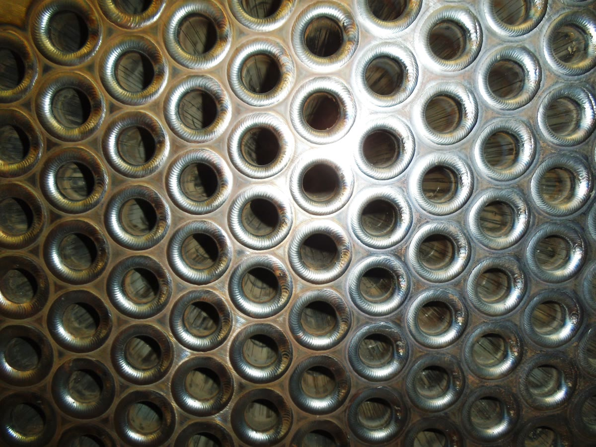
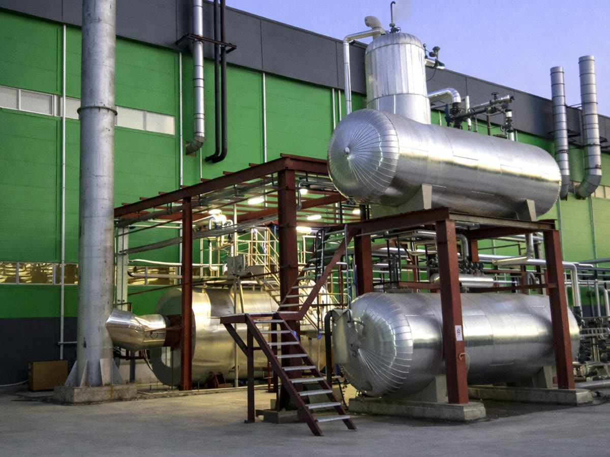
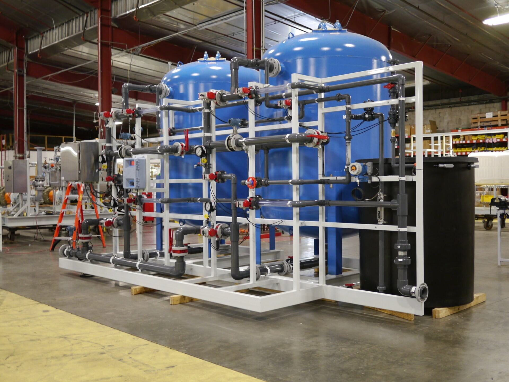
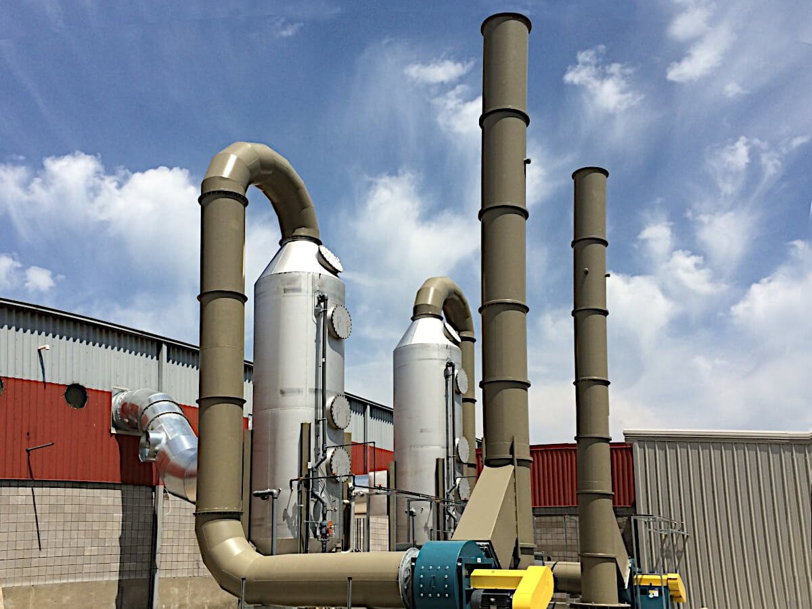
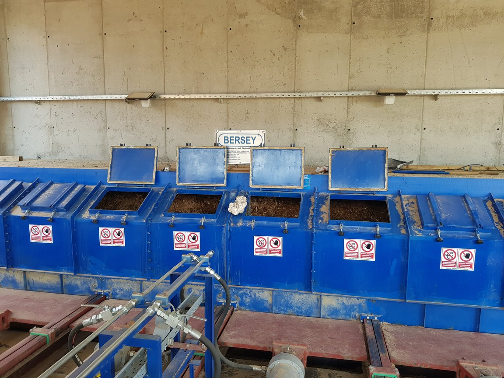

Kaydırın — ASME basınçlı kabımız parçalarına ayrılsın. AD 2000 · EN 13445 tasarım.
Kaydır ▾
Flanşlı kapak açılırBoru demeti dışarı alınırAD 2000 · EN 13445 tasarım
Basınçlı Ekipmanlar & Sistemler
Proses Ekipmanları
Basınçlı kaplar, proses tankları, ısı eşanjörleri, degazörler, su yumuşatma üniteleri, baca gazı temizleme sistemleri ve yardımcı ekipmanlar.

Basınçlı Kaplar
Yüksek basınç altında güvenle çalışacak şekilde tasarlanan ve imal edilen basınçlı kaplar, uluslararası norm ve standartlara uygun olarak enerji, kimya, gıda ve birçok endüstride güvenle kullanılmaktadır.
CE, EAC, Gospromnazor sertifikalı imalat
AD 2000, EN 13445 standartlarına uygun tasarım
Buhar akümülatörleri, hava tankları, genleşme tankları
Uzun ömürlü yapı ve güvenli işletme
Özel tasarım imkanı

Proses Tankları
Üretim süreçlerinin ihtiyaçlarına göre özel tasarlanan proses tankları, farklı hacim ve özelliklerde imal edilmekte olup karıştırma, depolama, şartlandırma ve proses güvenliği sağlar.
Sert ve yumuşak şeker pişirme üniteleri
Susam tahini üretim tankları
Lokum imalat üniteleri
Vinterizasyon ve batch tip ekstraksiyon
Nötralizasyon ve ağartma üniteleri
Proses ihtiyacına özel tasarım

Isı Eşanjörleri
Farklı akışkanlar arasında ısı transferini yüksek verimlilikle gerçekleştiren eşanjörlerimiz, enerji tasarrufu ve proses verimliliği için ideal çözümler sunar.
Yüksek verimli ısı transferi
Korozyon dirençli malzemeler
Kompakt ve modüler yapı
ASME ve EN standartlarına uygun
Enerji tasarrufu ve proses verimliliği

Degazörler
Buharlı sistemlerde, besi suyundaki oksijen ve diğer gazları gidererek korozyonu önleyen degazör sistemlerimiz, kazan ve tesisatlarınızın ömrünü uzatır.
Oksijen ve çözünmüş gaz giderimi
Buhar kazanları ile tam uyum
Otomatik kontrol sistemleri
Korozyon önleme ve kazan ömrünü uzatma
Düşük işletme maliyeti

Su Yumuşatma Üniteleri
Endüstriyel buhar ve sıcak su sistemleri için suyun sertliğini gidererek kireç taşını önler, enerji kayıplarını azaltır ve sistemlerinizi korur.
Sertlik giderme teknolojisi
Otomatik rejenerasyon
Buhar ve sıcak su sistemlerine uygun
PLC kontrollü çalışma
Kireç taşı önleme ve sistem ömrünü uzatma

Baca Gazı Temizleme Sistemleri
Yanma sonrası oluşan baca gazındaki partikül ve zararlı bileşenleri filtreleyerek çevre dostu, düşük emisyonlu ve standartlara uygun işletme sağlar.
Siklon ve multisiklonlar
Torbalı filtreler
Kuru tip ESP elektro filtreler
Baca gazı yıkama üniteleri
Çevresel standartlara tam uyum

Yardımcı Ekipmanlar
Enerji santrallerinin verimli ve kesintisiz çalışması için gerekli olan yakıt besleme, taşıma, depolama ve atık yönetim sistemleri.
Yakıt besleme sistemleri (hareketli taban, vidalı, hidrolik itici)
Bant konveyörler ve zincirli taşıyıcılar
Pnömatik toz besleme hatları
Kül boşaltma ve taşıma sistemleri (ıslak/kuru)
Yakıt depolama ve dozajlama sistemleri
Silo ve bunker sistemleri
Uzman mühendislik ekibimiz, ihtiyaçlarınıza en uygun çözümleri sunmak için hazır.